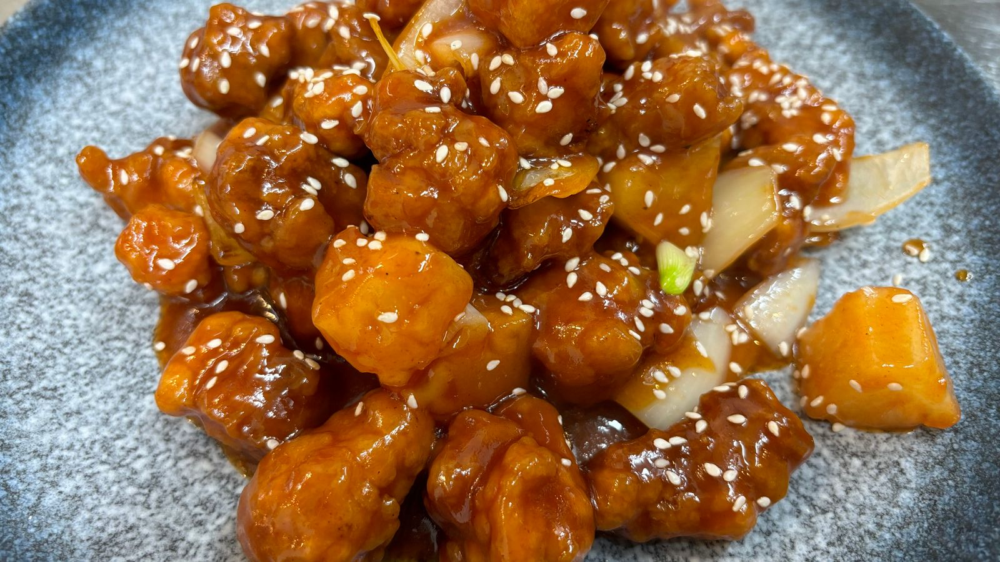
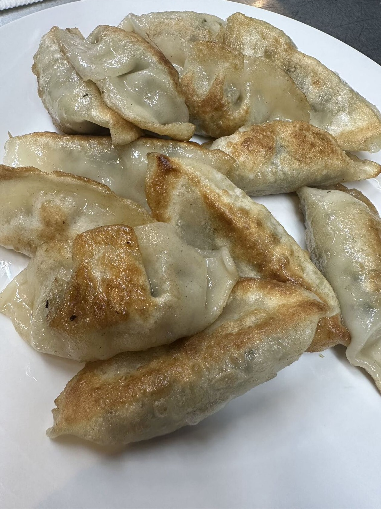
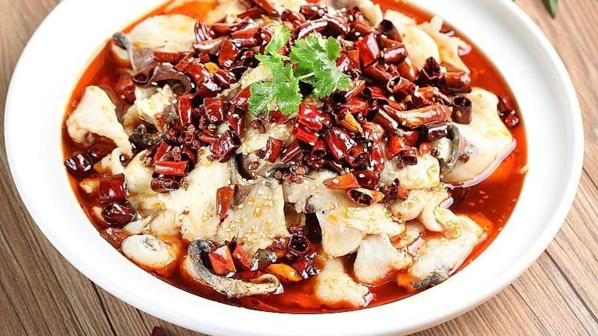
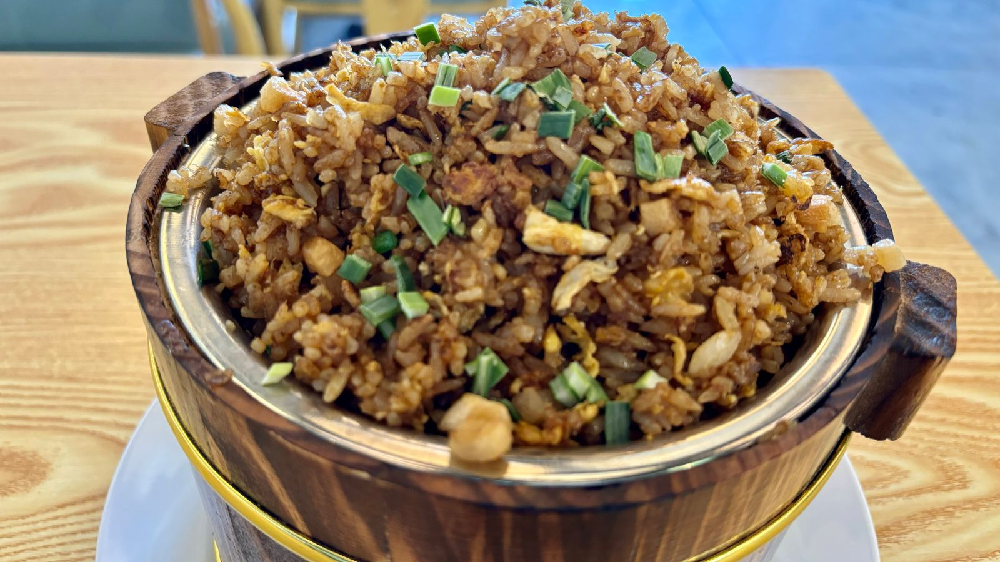

The menu
What we cook at Queenstown Central, grouped the way people order it. Dine in or takeaway, seven days, 10am to 10pm.




Prices and specials change with the seasons and what is coming in, so we keep them on the board in the restaurant rather than online. Ring the kitchen on +64 3 428 2723 and we will talk you through it — or ask about a set menu for a group of eight or more.
It takes a minute on Google, and it is how the next table in Queenstown finds us.
Write a Google review